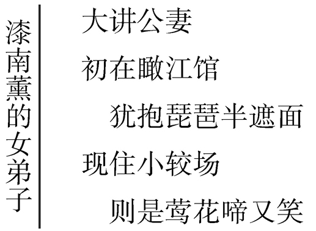

鲁迅案：我到上海后，所惊异的事情之一是新闻记事的章回小说化。无论怎样惨事，都要说得有趣——海式的有趣。只要是失势或遭殃的，便总要受奚落——赏玩的奚落。天南遯叟[468]式的迂腐的“之乎者也”之外，又加了吴趼人李伯元[469]式的冷眼旁观调，而又加了些新添的东西。这一段报章是从重庆寄来的，没有说明什么报，但我真吃惊于中国的精神之相同，虽然地域有吴蜀之别。至多，是一个他所谓“密司”[470]者做了妓女——中国古已有之的妓女罢了；或者他的朋友去嫖了一回，不甚得法罢了，而偏要说到漆某[471]，说到主义，还要连漆某的名字都调侃，还要说什么“羞恶之心”[472]，还要引《诗经》[473]，还要发“感慨”。然而从漆某笑到“男女学生”的投稿负责者却是无可查考的“笑男女士”，而传这消息的倒是“革新通信社”。其实是，这岂但奚落了“则其十之八九，确为共产分子无疑”的漆树芬而已呢，就是中国，也够受奚落了。丁卯季冬X日。
【备考】：某报剪注 瘦莲

革新通信社消息：顷有署名笑男女士者投来一稿，标题云，“漆树芬尚有弟子传芬芳”。原文云：前《新蜀报》主笔，向师政治部主任漆树芬者，字南薰，虽死于“三三一”案；但其人究竟是否共产党徒，迄今尚其说不一，不过前次南京政府通缉共产党，曾有漆名，且其前在《新蜀报》立言，亦颇含有“共味”，则其十分之八九，确为共产分子无疑。漆当今春时，原为某师政治训练处主任，男女学生，均并蓄兼收。有陈某者，亦所谓“密司”也，在该处肄业有日，于某师离渝时，遂请假未去，乃不知以何故，竟尔沦入平康，初尚与魏某旅长，讲所谓恋爱，于瞰江楼上，过其神女生涯。近日则公然在小较场小建香巢，高张艳帜，门前一树马樱花，沉醉着浪蝶狂蜂不少也。据余（该投稿人自称）男友某谈及，彼初在瞰江楼见面时，虽已非书生面目，但尚觉“犹抱琵琶半遮面”，不无羞恶之心，近在小较场再会，则莺花啼又笑，旧来面目全非，回顾其所谓“密司”时代，直一落千丈矣。噫，重庆社会之易人，有如此者，可不畏哉！或曰：“漆南薰之公妻主义，死有传人。”虽属谑而虐兮，亦令人不能不有此感慨也。
（注）“三三一案”（手民注意：是三三一案，不是三三一惨案，因为在重庆是不准如此称谓的）是大中华十六年三月卅一日，重庆各界在打枪坝开市民大会，反对英兵舰炮击南京，正在开会，有所谓暴徒数百人入场，马刀，铁尺，手枪……一阵乱打，打得落花流水，煞是好看。结果：男女学生，小学生，市民，一共打死二百余人云。
（又注）漆某生前大讲公妻（可惜我从不曾见着听着），死后有弟子（而且是女的）传其道，则其人虽死，其道仍存，真是虽死犹生。然这位高足密司陈，我曾经问过该师的女训育，说并无其人，或者是改了姓。然而这新闻中的记者老爷，又不曾说个清楚，所以我只得又注一章云。
（再注）“共味”者，共产主义的色彩也。因漆某曾做有一篇“学生不宜入党”的文章云。
（不注）这信如能投到，那末，发表与否是你的特权云。
渝州瘦莲谨注。丁卯仲冬戊辰日。
注 释
[467] 本篇最初发表于1928年1月21日《语丝》周刊第四卷第六期，在《某报剪注》一文之后。
[468] 天南遯叟 王韬（1828—1897），号天南遯叟，长洲（今江苏吴县）人，清末作家。曾在香港主编《循环日报》。著有笔记小说《遁窟谰言》、《淞隐漫录》等。
[469] 吴趼人（1866—1910） 名沃尧，字趼人，广东南海人，小说家。著有长篇小说《二十年目睹之怪现状》等。李伯元（1867—1906），名宝嘉，字伯元，江苏武进人，小说家。著有长篇小说《官场现形记》等。
[470] “密司” 英语Miss的音译，意为小姐。
[471] 漆某 指漆树芬（1892—1927），字南薰，四川江津人，经济学家。日本京都帝国大学毕业。1926年任川军向士俊师政治部主任，《新蜀报》主笔。1927年在重庆三三一惨案中被杀。著有《帝国主义经济侵略下之中国》等。《新蜀报》，1921年创刊于重庆，1950年停刊。第一次国内革命战争时期，该报在中国共产党人的支持下积极宣传反帝反封建，起过一定的进步作用。
[472] “羞恶之心” 语见《孟子·公孙丑（上）》：“无羞恶之心，非人也。”
[473] 《诗经》 我国最早的一部诗歌总集，约成书于西周到春秋时代，共三○五篇。本篇“备考”中“虽属谑而虐兮”一语，出自《诗经·卫风·淇奥》：“善戏谑兮，不为虐兮。”